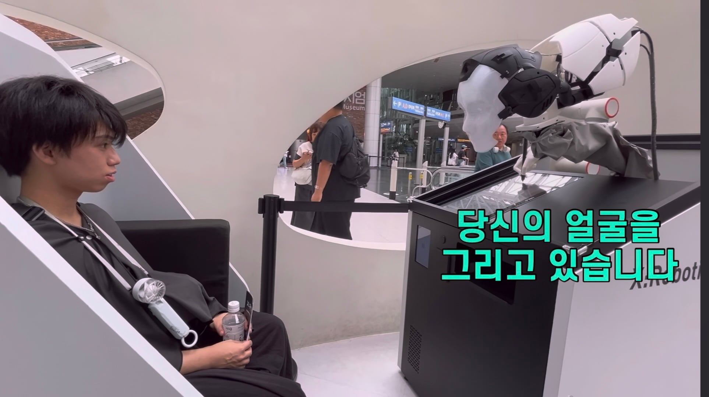
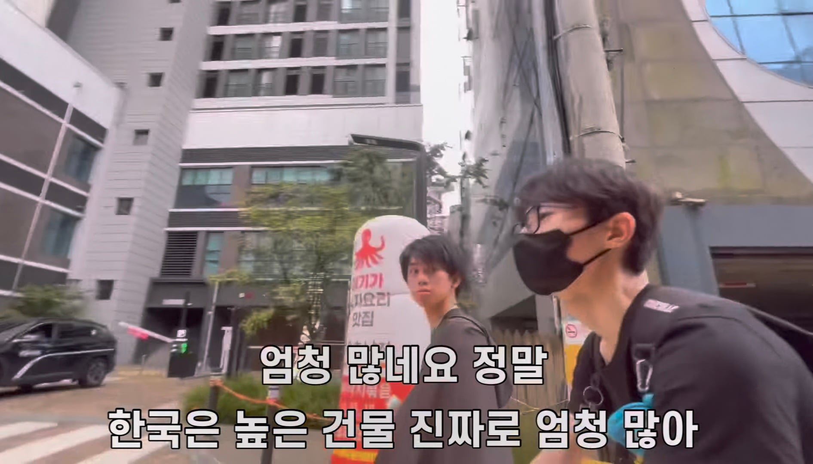
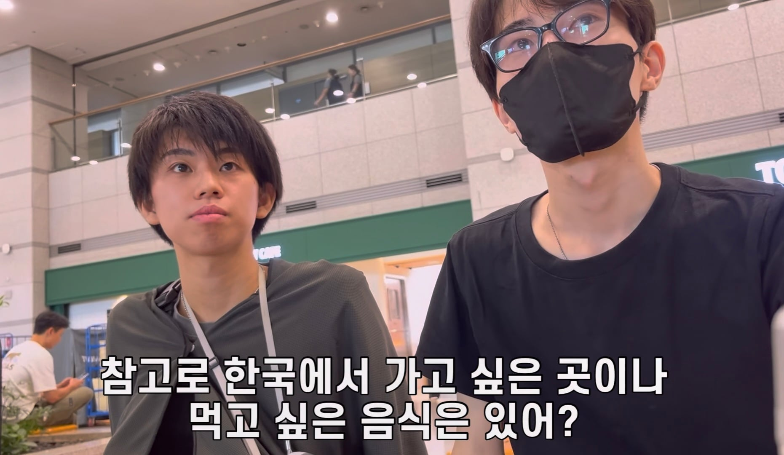
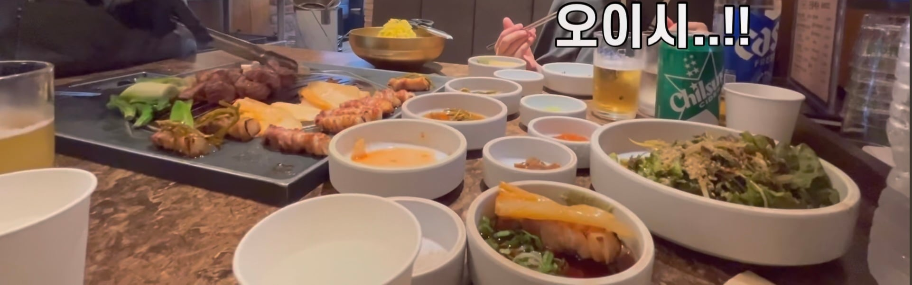
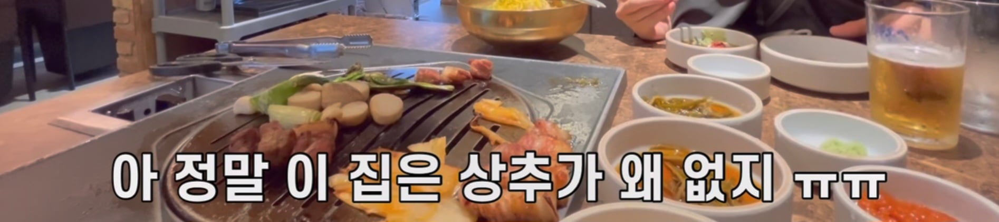

유튜버 지인을 통해 한국에 처음오게 된 두 일본인 친구들

인천공항에서 로봇이 인식해서 얼굴을 그리는 신세계도 경험하고
공항철도를 타고 한강의 크기에 압도된다.

서울에 도착하여 높은 건물들이 많은것을 보고 놀라기도 하는 두 일본인 친구들

일본잌 친구들은 한국에서 제일 먹고싶어하는 음식이 삼겹살이라고 한다. 삼겹살은 역시 세계제일이다

처음 먹어본 삼겹살의 맛에 감탄하며 오이시를 연발하는 일본인 친구다.
근데 좀 이상하지 않은가? 여기서 삼겹살의 상차림 구성이 좋고 맛도 있는데 빼먹으면 안되는걸 빼먹어서 선을 넘는다.

바로 쌈채소가 없는것이다. 상추가 없으면 깻잎이라도 있어야 하지만 선을 씨게 넘어버림...
흠... 고기+밥 스타일이라 쌈채소 안먹음